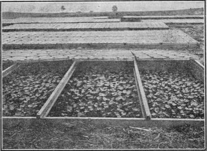

512. Starting Early Muskmelon Plants
Description
This section is from the book "Vegetable Gardening", by Ralph L. Watts. Also available from Amazon: Vegetable Gardening.
512. Starting Early Muskmelon Plants
The general custom is to plant the seed in the field, but as this cannot be done until the ground is thoroughly warm and there is no further danger of frost, many growers have found it profitable to start the plants in hotbeds or greenhouses. There are three distinct advantages in following this method: (1) The melons ripen from a week to 10 days earlier than in open air planting; (2) it makes possible the growing of muskmelons where the summers are short and cool; and (3) it may be the means of avoiding serious trouble from the attacks of insects, particularly those of the striped cucumber beetle.
On the eastern shore of Maryland and in some other southern sections, part of the crop is started under glass. The Canadian crop of the Montreal Market is always started under glass and protected by sash as long as may be necessary. At Decker, Indiana, all of the plants for hundreds of acres are grown in hotbeds until about four weeks old. In many other parts of the country, glass is used to a greater or less extent in forwarding the plants before it is safe to set them in the field.
It is generally conceded that sowing should not occur more than four weeks before setting in the field, because of the danger of the plants becoming stunted in the frames or the houses or receiving a check when taken to the field. Some growers, however, keep them under glass six weeks, which necessitates at least two shifts in pots and a liberal amount of space.
Paper or earthen pots, berry baskets and veneer boxes are in general use. Some growers also plant on inverted sods or in hills in flats, and block out the soil around the plants with a sharp butcher knife when planting in the field.
The Montreal melons are sown in any convenient seed bed, and the young seedlings set in 3 or 4-inch pots, and shifted to larger pots for the early crop, the seed for which is sown earlier than when only one shift is made.
The Indiana Experiment Station (Ind. Sta. Bul. 123, p. 6) gives the following description of the method employed at Decker: "The beds are substantially built of 2x8 planking and are 9 feet wide and from 25 to 40 feet long. Many of them hold 2,000 to 3,000 young plants, or enough to set out nearly two acres. A single grower frequently has a range of 30 to 40 of these hotbeds, en-x abling him to set from 50 to 75 acres of cantaloupes. The beds are usually placed in a warm and sheltered situation, so as to get the full benefit of the early spring sun. The seed is started during the last week of March or the first of April in small veneer boxes. These are about 5 inches square and are similar to berry boxes, except that the bottoms are flush instead of recessed. They are placed side by side in the bottom of a hotbed and filled with finely prepared earth and compost. Great care is taken with the material for the seed bed, and it is very thoroughly worked over before being used.
"The soil is made firm and allowed to come slightly above the top of the boxes in the hotbed. It is then marked out in squares in such a way that the intersection of the marks center the boxes. The seed bed is now ready. After putting in the seed, careful attention is given to watering, to ventilation and to keeping out weeds. A day temperature is maintained at first of 50 to 60 degrees. As the time for transplanting draws near more air is given in order to harden off the young plants. The seedlings are moved about in the beds to fill possible vacancies, and by the time they are ready to transplant a perfect stand has been secured with one plant in a hill. (Figure 88).
Fig. 88. starting muskmelons in frames.
"Several plans for watering are in successful use. A common method is to mount a tank on trucks and drive along the hotbeds, watering through a lead of hose, provided with a rosette. Some growers, whose beds are near their windmills, have pipe lines laid among their beds with hydrants conveniently located for watering with the hose, the pressure being supplied by a tank in the windmill tower".
Whether starting in hotbeds or in greenhouses, fresh air should be admitted daily to secure strong, healthy plants. There is much less trouble from damping off fungi when this matter is given proper attention.
513. Soil Preparation
Land which has been previously cropped with red clover, alfalfa, cowpeas or crimson clover is regarded excellent for muskmelons. Soil that has been highly manured for other truck crops the previous year is well suited to this vegetable, provided other conditions are satisfactory. Early spring preparation is essential. The plowing should be as deep as for any other crop, and the land should be harrowed at proper intervals until time to plant.
514. Fertilizing
In fertilizing, the muskmelon grower should keep four facts in mind, viz., (1) that this plant thrives best in soils containing a liberal proportion of vegetable matter; (2) that soils excessively rich in nitrogen are likely to cause a rank growth of vine and a small and inferior crop of melons; (3) that rapid growth is important early in the season; (4) that the mineral elements are essential to large yields and high quality.
Stable manures are unquestionably the most effective materials to use in growing muskmelons. They should be thoroughly composted before applying. As indicated for cucumbers, various kinds of stable manures may be applied broadcast, in the hills, or in furrows previous to planting. In most instances, profits are increased by supplementing with commercial fertilizers. When clover sods or leguminous crops are plowed down, splendid results can be obtained from fertilizers alone, using more nitrogen than when stable manures are employed. A 4-8-10 fertilizer probably meets the requirements of most soils as satisfactbrily as any mixture that can be used, although there might be some advantage in reducing the percentage of potash and increasing the phosphoric acid. One thousand pounds of this fertilizer applied before planting is sufficient in most cases. Some growers prefer to use about half of the allowance to the acre a week or more before planting and the balance after the crop is well started; others apply all of the general mixture before planting, supplementing later with top-dressings of nitrate of soda if the growth indicates the need of more nitrogen.
Numerous and comprehensive experiments were made in Georgia (Ga. Sta. Bul. 57, pp. 163-175), the station making the following recommendation: For South Georgia, 1,000 pounds acid phosphate (14 per cent), 250 pounds muriate of potash and 1,000 pounds cottonseed meal. This formula will analyze 3 per cent of nitrogen, 8 per cent of phosphoric acid and 7 per cent of potash. For Middle and North Georgia: 1,300 pounds acid phosphate (14 per cent), 200 pounds muriate of potash and 1,000 pounds of cottonseed meal, which formula will analyze about 2.8 per cent of nitrogen, 8 per cent phosphoric acid, 5 per cent potash. The station recommends from 600 to 800 pounds an acre.
In northern as well as southern sections of the United States, part of the nitrogen should be derived from nitrate so as to hasten growth immediately after planting. The thinner the soil the greater the necessity for using large amounts of nitrogen.
Continue to:
Tags
plants, crops, gardening, cultivated, harvesting, food ,greenhouses, fertiliser, vegitables